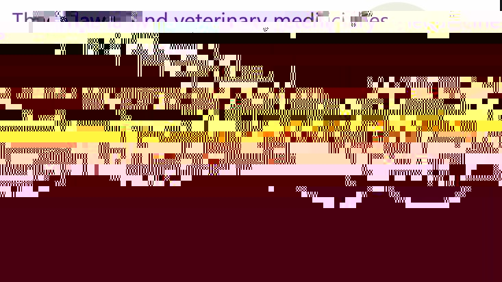
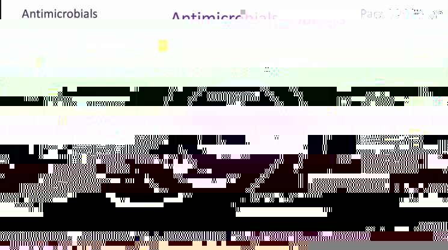
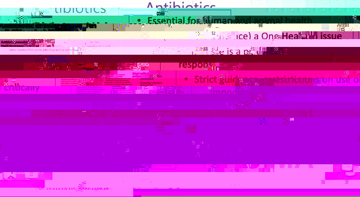
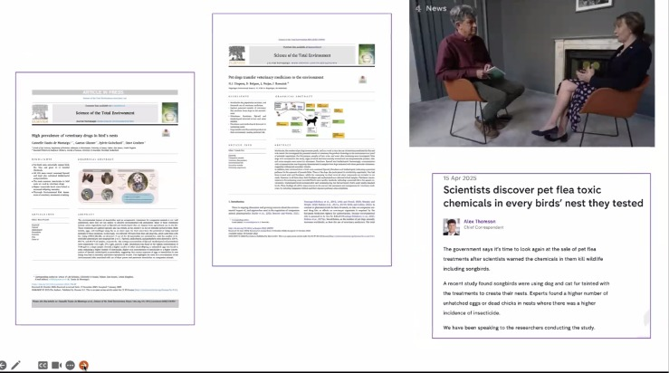
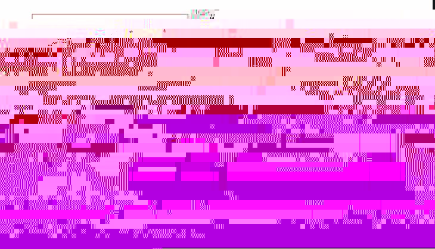
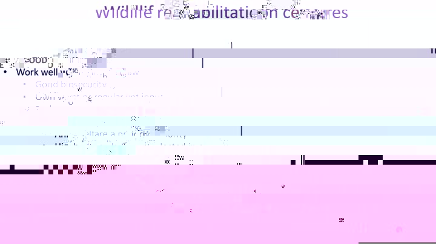
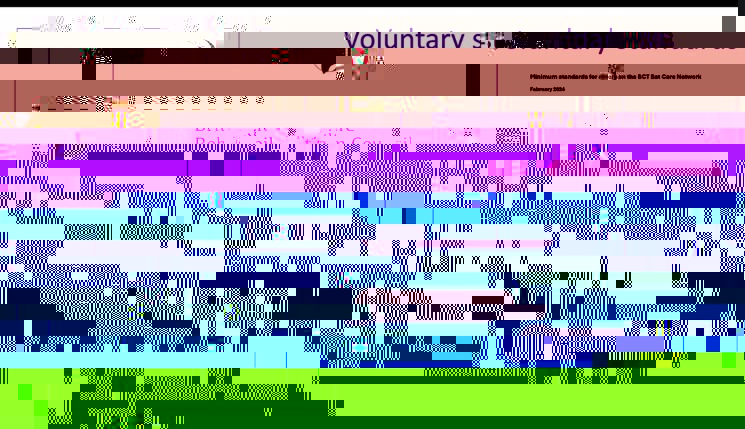
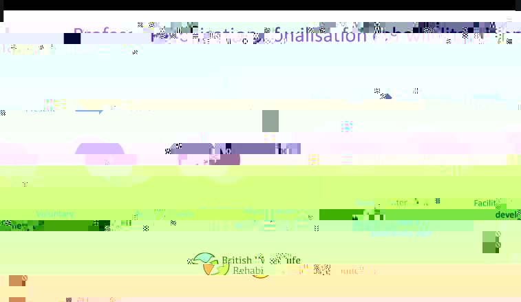
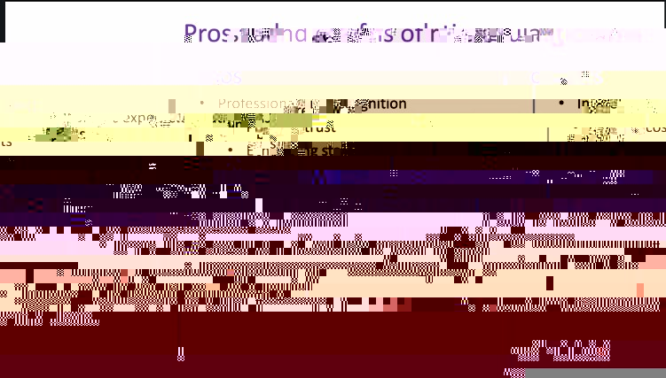

📁 מרכז שיקום ואקלום · שקפים 8–19
 8. וטרינרים ומשקמים – למה אנחנו צריכים אחד את השני
8. וטרינרים ומשקמים – למה אנחנו צריכים אחד את השני

9. החוק ותרופות וטרינריות (One Health)

10. חומרים אנטי-מיקרוביאליים: מטופל ← מרכז ← סביבה

11. אנטיביוטיקה ועמידות (AMR) בשיקום חיות בר

12. תרופות נגד פרעושים בקיני ציפורים – מחקרים
 13. תכשירים נגד טפילים (פרזיטיצידים)
13. תכשירים נגד טפילים (פרזיטיצידים)

14. בית הלורדים: Paws for concern – הגבלת מכירה

15. מרכזי שיקום "טובים" – מאפיינים
16. להצדיק את מה שאנחנו עושים – 10 שנות נתונים

17. סטנדרטים וולונטריים (BCT, BWRC)

18. מקצועיות השיקום – מעבר לעתיד מוסדר

19. יתרונות וחסרונות של רגולציה